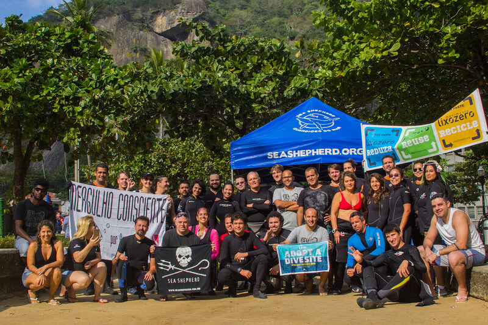
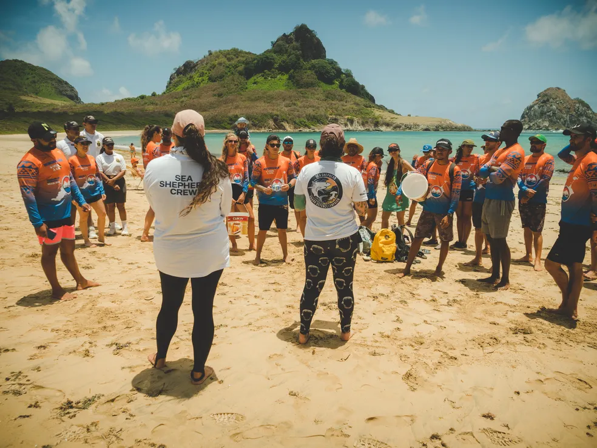
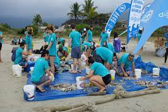

Bem-vindo ao nosso projeto para salvar as tartarugas!
Proposta de Projeto de Conservação da Vida Marinha
Introdução
A vida marinha enfrenta crescentes desafios devido à degradação do habitat, poluição, pesca excessiva e mudanças climáticas. Entre as espécies afetadas, as tartarugas marinhas estão entre as mais vulneráveis. Com base nisso, propomos um projeto abrangente de conservação da vida marinha, com foco especial na proteção e preservação das tartarugas marinhas.
Objetivos
- Preservação de Habitat
- Redução de Ameaças Diretas
- Engajamento Comunitário
- Monitoramento e Pesquisa
Estratégias de Implementação
- Proteção de Praias de Desova
- Redução da Captura Incidental
- Campanhas de Conscientização
- Restauração de Habitats
- Parcerias e Cooperação Internacional
Proposta de Projeto de Conservação das Tartarugas Marinhas
Introdução
As tartarugas marinhas desempenham um papel vital nos ecossistemas marinhos, mas enfrentam diversas ameaças que colocam em risco sua sobrevivência. Esta proposta visa implementar medidas de conservação específicas para proteger e preservar as populações de tartarugas marinhas e seus habitats.
Objetivos
- Proteção de Praias de Desova
- Redução da Captura Incidental
- Reabilitação de Tartarugas Feridas
- Pesquisa e Monitoramento
- Educação Ambiental
Estratégias de Implementação
- Parcerias Institucionais
- Engajamento Comunitário
- Campanhas de Sensibilização
- Desenvolvimento Sustentável